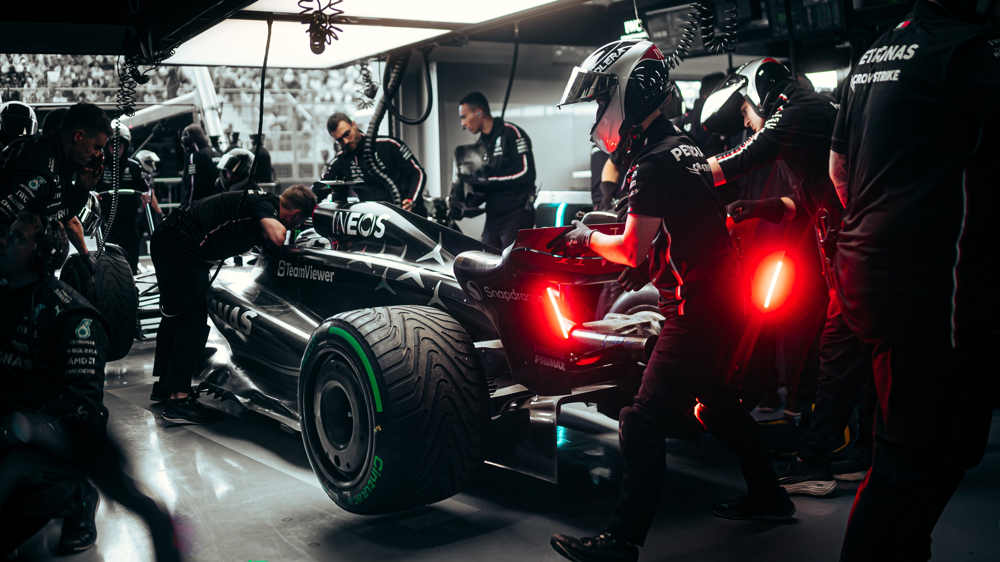
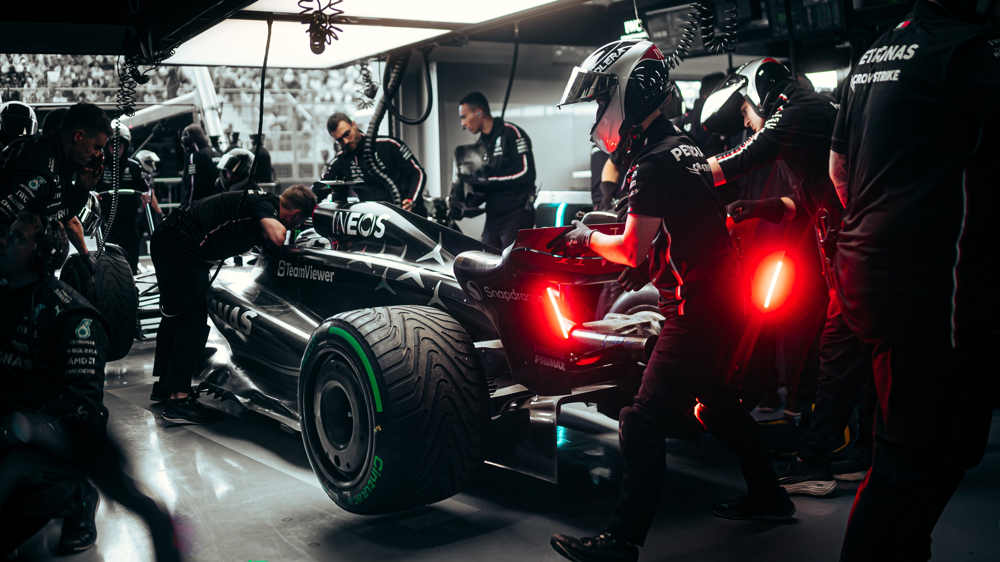
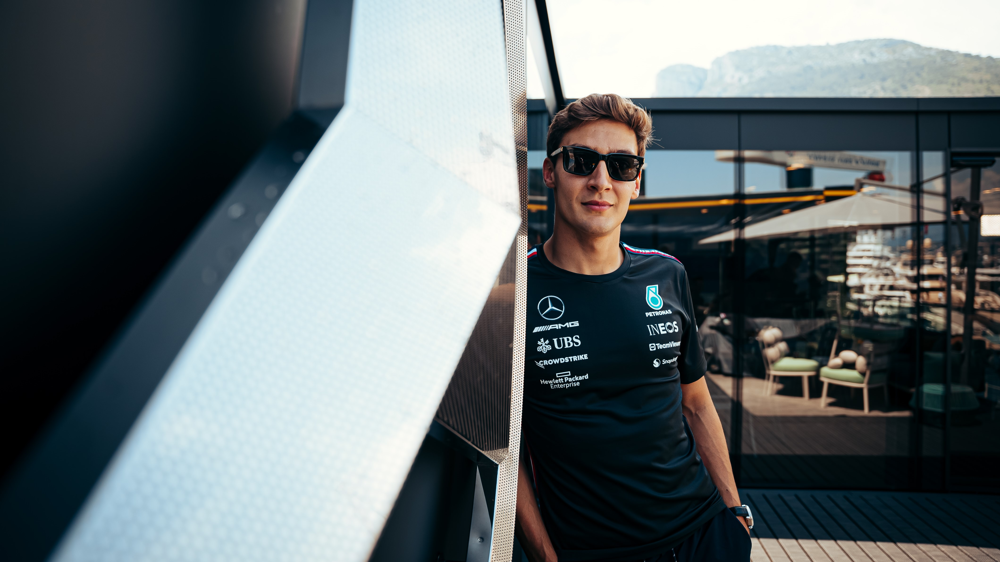
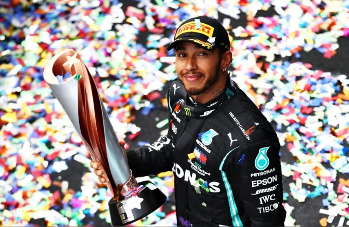
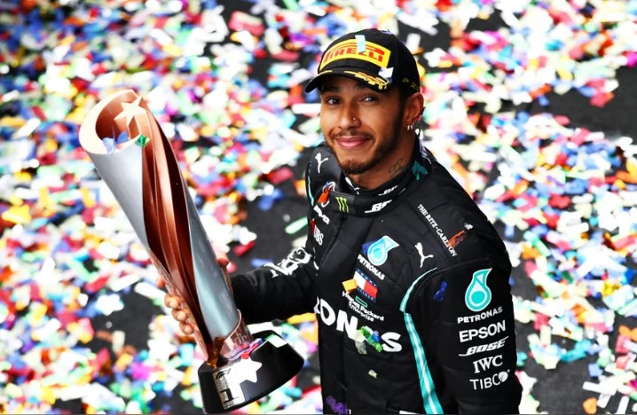
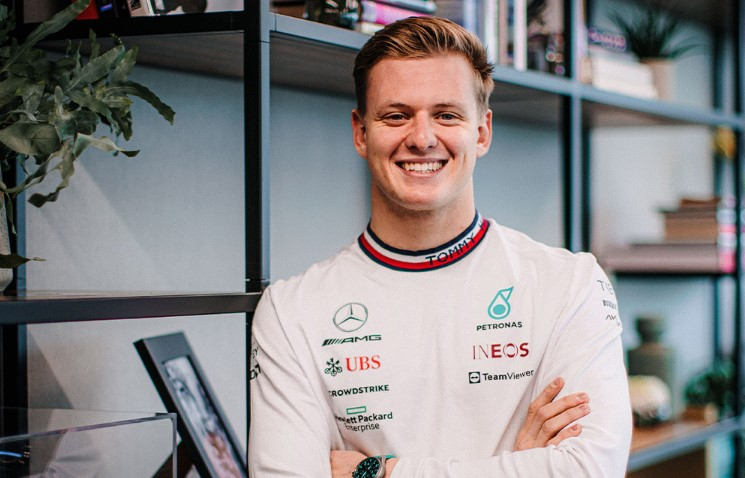
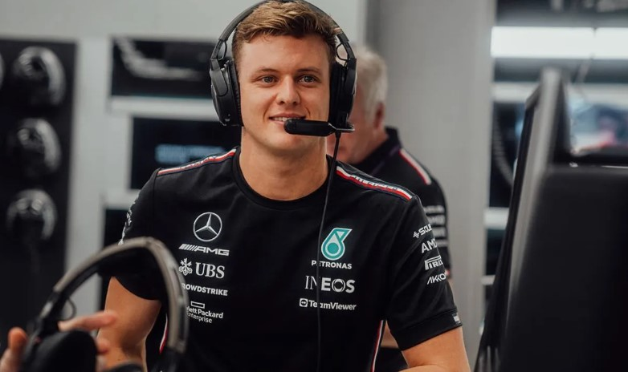
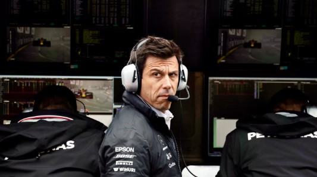
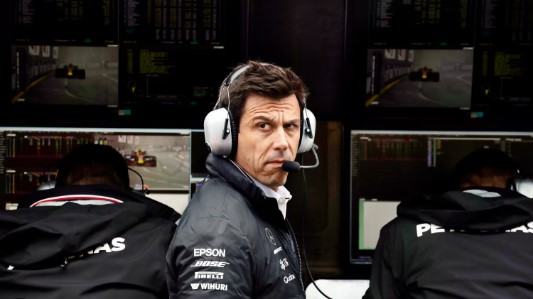

Mercedes-AMG Petronas Formula One Team
 

- Base: Brackley, United Kingdom
- Team Chief: Toto Wolff
- Technical Chief: James Allison
- Chassis: W14
- Power Unit: Mercedes
- First Team Entry: 1970
- World Championships: 8
- Highest Race Finish:1
- Pole Positions: 129
- Fastest Laps: 94
Mercedes AMG Petronas Formula One Team, a powerhouse in F1, boasts numerous Constructors' Championships. Renowned for pioneering hybrid power units, their innovation redefined racing technology. Partnered with legendary drivers like Lewis Hamilton, they've dominated the sport, setting records for pole positions and wins. Mercedes' legacy is etched in F1 history as an iconic team synonymous with excellence, engineering prowess, and unparalleled success.
Race Drivers:
- Lewis Hamilton :
- George Russell : 
 

Lewis Hamilton, a British Formula One driver, is a seven-time world champion, showcasing his exceptional skill, speed, and consistency. His record-breaking pole positions and race wins have solidified his status as one of the greatest drivers in F1 history. With a dynamic style and strategic prowess, he's revolutionized modern racing, setting new standards for achievement and athleticism on the track.

George Russell, a British racing driver, has showcased his talent in Formula One, notably with the Williams team. He's earned a reputation for impressive performances despite being in a less competitive car. Russell's temporary stint with Mercedes in 2020 highlighted his potential, as he filled in for Lewis Hamilton. His achievements reflect his promising future as a potential contender for F1 victories.
Reserve Driver:
- MICK SCHUMACHER :  
With their previous reserve drivers flying the nest, Mercedes were keen to find a successor. The perfect opportunity rose to bag Mick Schumacher as their official 2023 reserve after he’d lost his seat with Haas and ended his association with Ferrari. The role will see him sit trackside with the team at every race this season and conduct work in the simulator.
Number of F1 starts: 43
Eligible as FP1 rookie: NO
Team principal:
- Toto Wolff :
 

Toto Wolff, a prominent figure in Formula One, is the Team Principal and CEO of Mercedes-AMG Petronas Formula One Team. Under his leadership, the team has clinched multiple Constructors' and Drivers' Championships, achieving unprecedented success. His strategic acumen, management skills, and commitment to excellence have solidified his status as a key architect behind Mercedes' dominance in the F1 world.